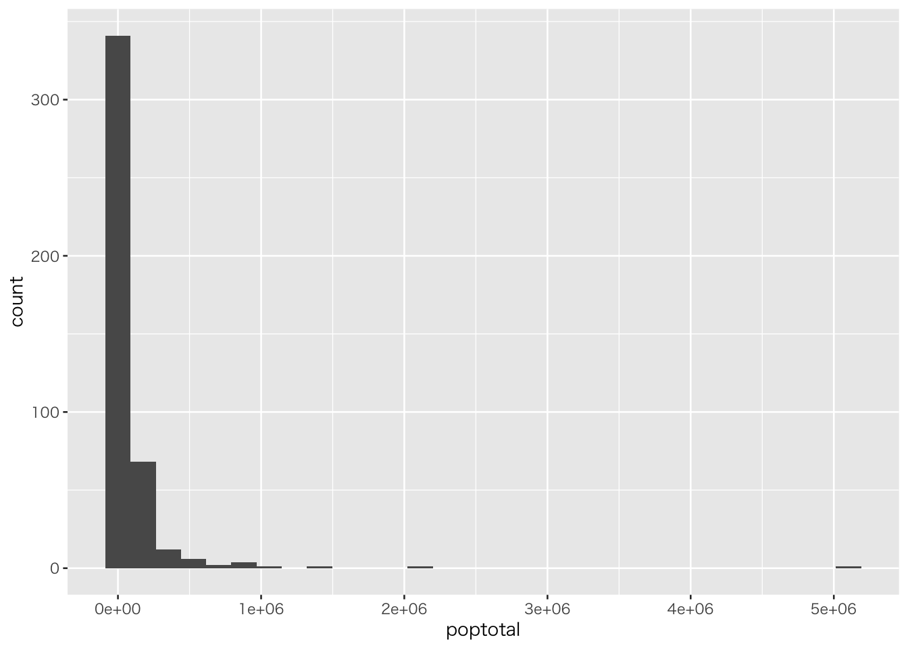
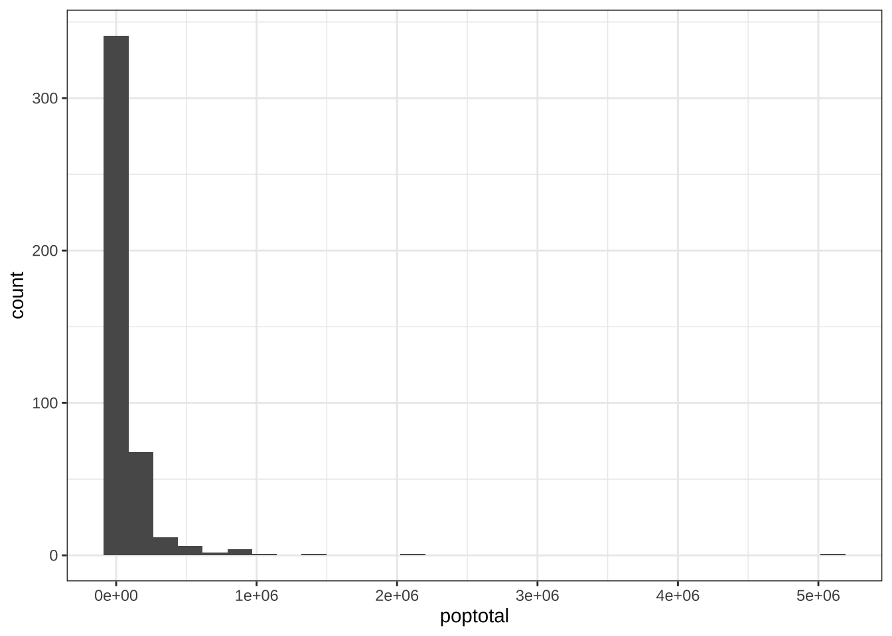
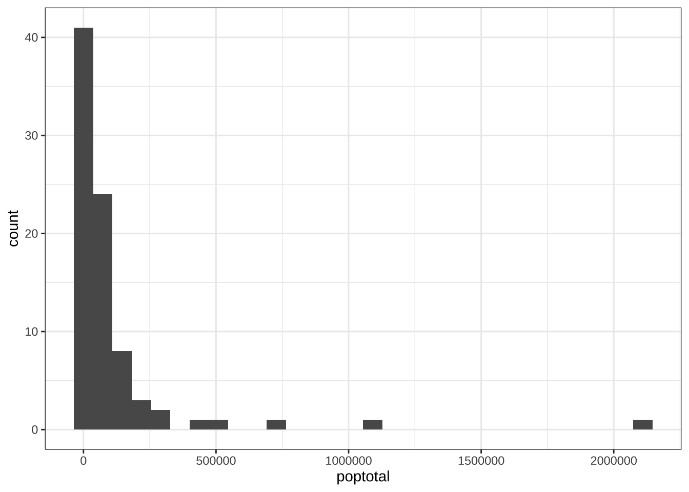
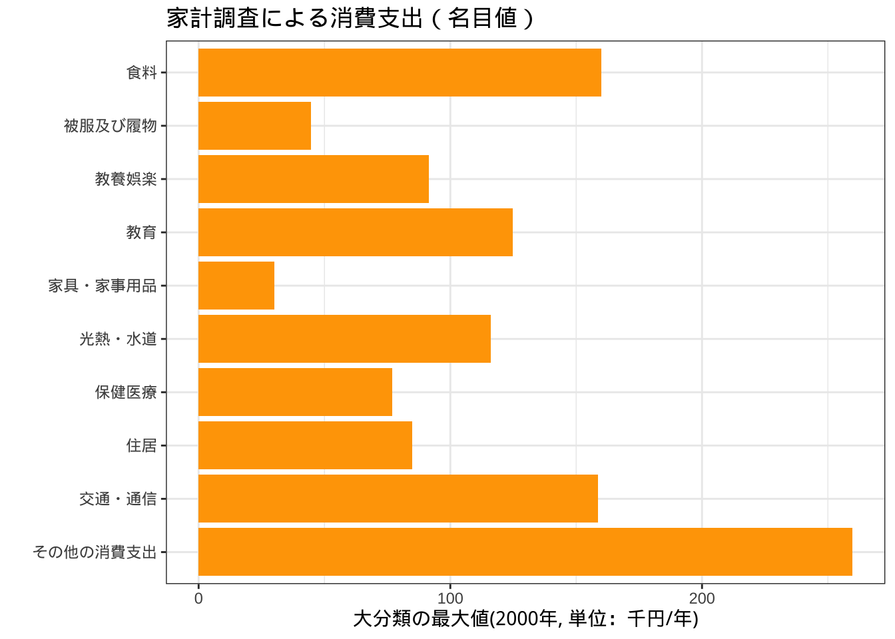
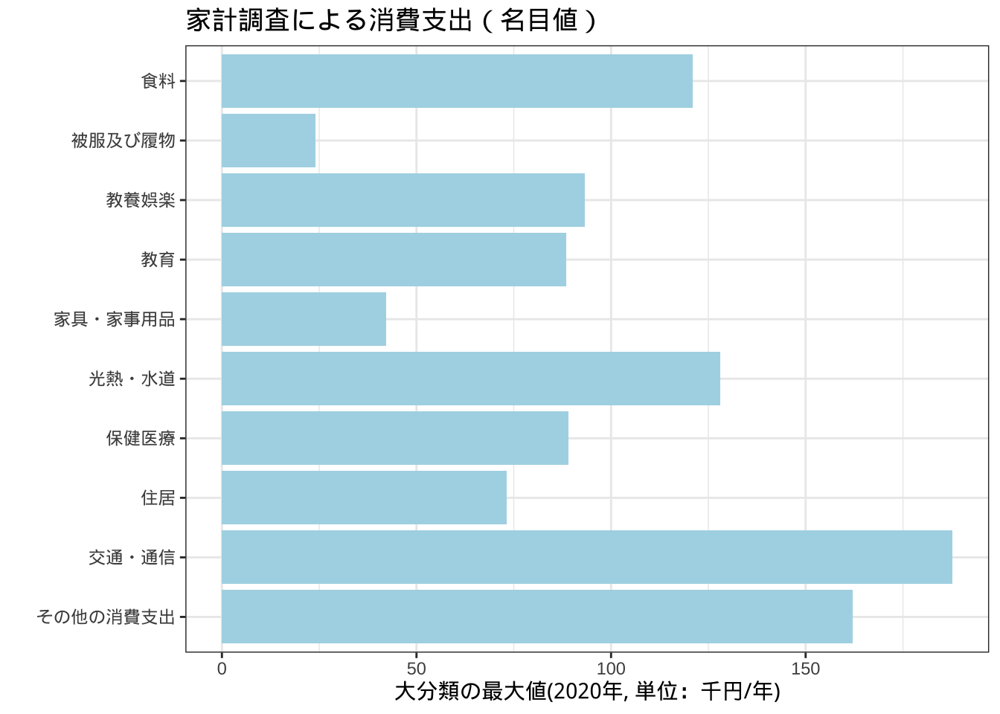

chapter: 9 dplyrによるデータ集計
9.1 はじめに
データ分析にかかる時間の大半は、分析目的に合わせてデータをキレイに整える段階に費やされます。Rのdplyrというpackageを用いて、少しでも楽にデータ集計を進めるためのコツを学びます。
一定の時間が経過した後に見直しをすると、クリック操作で行った手続きを思い出すことは不可能です。できるだけRの環境の中でデータの整理を行うことでデータ整理自体の時間節約になるだけでなく、dplyrコマンドとして作業を記録しておくことで、過去の自分が何をしたかを思い出す時間も節約することができます。
#install.packages("dplyr")
library(dplyr)
library(ggplot2)
head(midwest)## # A tibble: 6 × 28
## PID county state area popto…¹ popde…² popwh…³ popbl…⁴ popam…⁵ popas…⁶ popot…⁷ percw…⁸ percb…⁹ perca…˟ perca…˟
## <int> <chr> <chr> <dbl> <int> <dbl> <int> <int> <int> <int> <int> <dbl> <dbl> <dbl> <dbl>
## 1 561 ADAMS IL 0.052 66090 1271. 63917 1702 98 249 124 96.7 2.58 0.148 0.377
## 2 562 ALEXAN… IL 0.014 10626 759 7054 3496 19 48 9 66.4 32.9 0.179 0.452
## 3 563 BOND IL 0.022 14991 681. 14477 429 35 16 34 96.6 2.86 0.233 0.107
## 4 564 BOONE IL 0.017 30806 1812. 29344 127 46 150 1139 95.3 0.412 0.149 0.487
## 5 565 BROWN IL 0.018 5836 324. 5264 547 14 5 6 90.2 9.37 0.240 0.0857
## 6 566 BUREAU IL 0.05 35688 714. 35157 50 65 195 221 98.5 0.140 0.182 0.546
## # … with 13 more variables: percother <dbl>, popadults <int>, perchsd <dbl>, percollege <dbl>, percprof <dbl>,
## # poppovertyknown <int>, percpovertyknown <dbl>, percbelowpoverty <dbl>, percchildbelowpovert <dbl>,
## # percadultpoverty <dbl>, percelderlypoverty <dbl>, inmetro <int>, category <chr>, and abbreviated variable
## # names ¹poptotal, ²popdensity, ³popwhite, ⁴popblack, ⁵popamerindian, ⁶popasian, ⁷popother, ⁸percwhite,
## # ⁹percblack, ˟percamerindan, ˟percasian9.2 パイプ演算子について
パイプ演算子とは%>%のことで、dplyrを読み込むことで使用できます。パイプ演算子は、パイプの左側のオブジェクトを右側に「流す」ことができます。最初は直感的にわかりにくいかもしれませんが、これによって、以下のようなメリットが生まれます。
- 集計の途中で無駄なデータフレームを作る必要がない。
- コードが簡素化され、見やすくなる。
- 改行が入るので、コメントを残しやすい。
一方、デメリットとしては、たまにパイプ演算子を使うとうまく機能させられない関数がありますが、入門の段階ではそのような現象はほとんどなく、導入のメリットしかないと思いますので、積極的に活用ですべきと考えます。
# パイプ演算子を用いた場合
midwest %>%
ggplot()+geom_histogram(aes(poptotal))## `stat_bin()` using `bins = 30`. Pick better value with `binwidth`.
# パイプ演算子を用いない場合
ggplot(midwest)+geom_histogram(data=midwest,aes(poptotal))## `stat_bin()` using `bins = 30`. Pick better value with `binwidth`.
# パイプ演算子で他の演算も行う
midwest %>%
filter(state=="MI") %>% # 対象をミシガン州だけに
ggplot()+geom_histogram(aes(poptotal))## `stat_bin()` using `bins = 30`. Pick better value with `binwidth`.
# パイプ演算子を用いないで、他の演算も行う
midwestMI<-filter(midwest, state=="MI")
ggplot(midwestMI)+geom_histogram(aes(poptotal)) ## `stat_bin()` using `bins = 30`. Pick better value with `binwidth`.最後の例では結果として２行になり、midwestMIというデータフレームも作成された。
9.3 エクセル作業を代替してみる
エクセルでクリックで行う作業をコードで残そう。演習に使うデータとして、総務省統計局による家計調査を使用する。
家計調査は標本調査であり，層化3段抽出法（第1段―市町村，第2段―単位区，第3段―世帯）により世帯を選定している。選定にあたっては特定の世帯が続けて調査の対象にならないように配慮している。市町村の抽出の仕方は次のとおりである。都道府県庁所在市及び政令指定都市については各市を1層とし52層に分けた。その他の人口5万以上の市については直近の国勢調査の結果に基づき，地方，都市階級に分けた後，
- 人口集中地区人口比率
- 人口増減率
- 産業的特色
- 世帯主の年齢構成
を考慮して74層に分けた。また，人口5万未満の市及び町村は，地方で分けた後，(1)地理的位置（海沿い，山地等），(2)世帯主の年齢構成を用いて，計42層に分けた。このようにして分けられた全国計168層の各層から1市町村ずつ抽出した。
| 地域 | 調査市町村数 | 二人以上の調査世帯数 | 単身調査世帯数 | |
|---|---|---|---|---|
| 全国 | 168 | 8,076 | 673 | |
| 都道府県庁所在市及び大都市 | 52 | 5,472 | 456 | |
| 人口5万以上の市（上記の市を除く） | 74 | 2,100 | 175 | |
| 人口5万未満の市及び町村 | 42 | 504 | 42 |
library(readxl)
#ウェブサイトから直接ダウンロードする場合
url1<-"https://yamamoto-masashi.github.io/DSlec/kakei2000.xlsx"
download.file(url1,destfile="kakei2000.xlsx")
# エクセルファイルの読み込み
# sheet=1を変更することで別のシートも読める
kakeiDB<-readxl::read_excel("kakei2000.xlsx",sheet=1)データベースの列を増減する。mutate()関数で新しい変数を加えることができます。select()関数はデータフレームに維持する変数名を指定して任意の大きさのデータフレームに変更できます。以下の例では変数名に「-」(マイナス)をつけることで指定した変数だけを除外したデータフレームを作成しています。
# 列の追加
kakeiDB %>%
dplyr::rowwise() %>%
mutate(rSum1920=sum(FY2019, FY2020)) ->kakeiDB
head(kakeiDB)## # A tibble: 6 × 28
## # Rowwise:
## Category1 Catego…¹ Categ…² Categ…³ Categ…⁴ Categ…⁵ FY2000 FY2001 FY2002 FY2003 FY2004 FY2005 FY2006 FY2007 FY2008
## <dbl> <chr> <dbl> <chr> <chr> <chr> <dbl> <dbl> <dbl> <dbl> <dbl> <dbl> <dbl> <dbl> <dbl>
## 1 1 食料 10 穀類 1 米 40256 38293 36593 37256 37294 32896 30967 30679 31230
## 2 1 食料 10 穀類 2 パン 27512 26358 26750 27189 27610 26253 26559 27096 28220
## 3 1 食料 10 穀類 3 麺類 18771 18373 18389 18165 18053 16662 16292 16414 17985
## 4 1 食料 10 穀類 4 他の穀… 4354 4266 4169 4170 4041 4759 4643 4880 5127
## 5 1 食料 11 魚介類 1 生鮮魚… 67847 65056 64564 60487 57670 56018 55315 55007 52070
## 6 1 食料 11 魚介類 2 塩干魚… 19876 19360 18741 18009 17293 17165 16955 16859 16671
## # … with 13 more variables: FY2009 <dbl>, FY2010 <dbl>, FY2011 <dbl>, FY2012 <dbl>, FY2013 <dbl>, FY2014 <dbl>,
## # FY2015 <dbl>, FY2016 <dbl>, FY2017 <dbl>, FY2018 <dbl>, FY2019 <dbl>, FY2020 <dbl>, rSum1920 <dbl>, and
## # abbreviated variable names ¹Category1J, ²Category2, ³Category2J, ⁴Category3, ⁵Category3J# 列の削除
kakeiDB %>%
select(-rSum1920) -> kakeiDB
head(kakeiDB)## # A tibble: 6 × 27
## # Rowwise:
## Category1 Catego…¹ Categ…² Categ…³ Categ…⁴ Categ…⁵ FY2000 FY2001 FY2002 FY2003 FY2004 FY2005 FY2006 FY2007 FY2008
## <dbl> <chr> <dbl> <chr> <chr> <chr> <dbl> <dbl> <dbl> <dbl> <dbl> <dbl> <dbl> <dbl> <dbl>
## 1 1 食料 10 穀類 1 米 40256 38293 36593 37256 37294 32896 30967 30679 31230
## 2 1 食料 10 穀類 2 パン 27512 26358 26750 27189 27610 26253 26559 27096 28220
## 3 1 食料 10 穀類 3 麺類 18771 18373 18389 18165 18053 16662 16292 16414 17985
## 4 1 食料 10 穀類 4 他の穀… 4354 4266 4169 4170 4041 4759 4643 4880 5127
## 5 1 食料 11 魚介類 1 生鮮魚… 67847 65056 64564 60487 57670 56018 55315 55007 52070
## 6 1 食料 11 魚介類 2 塩干魚… 19876 19360 18741 18009 17293 17165 16955 16859 16671
## # … with 12 more variables: FY2009 <dbl>, FY2010 <dbl>, FY2011 <dbl>, FY2012 <dbl>, FY2013 <dbl>, FY2014 <dbl>,
## # FY2015 <dbl>, FY2016 <dbl>, FY2017 <dbl>, FY2018 <dbl>, FY2019 <dbl>, FY2020 <dbl>, and abbreviated variable
## # names ¹Category1J, ²Category2, ³Category2J, ⁴Category3, ⁵Category3Jfilter()関数を使って条件をつけてデータベースの行を絞り込む。
# 魚介類だけを取り出す
kakeiDB %>%
filter(Category2==11)->Cat2_11
print(Cat2_11)## # A tibble: 4 × 27
## # Rowwise:
## Category1 Catego…¹ Categ…² Categ…³ Categ…⁴ Categ…⁵ FY2000 FY2001 FY2002 FY2003 FY2004 FY2005 FY2006 FY2007 FY2008
## <dbl> <chr> <dbl> <chr> <chr> <chr> <dbl> <dbl> <dbl> <dbl> <dbl> <dbl> <dbl> <dbl> <dbl>
## 1 1 食料 11 魚介類 1 生鮮魚… 67847 65056 64564 60487 57670 56018 55315 55007 52070
## 2 1 食料 11 魚介類 2 塩干魚… 19876 19360 18741 18009 17293 17165 16955 16859 16671
## 3 1 食料 11 魚介類 3 魚肉練… 10425 10329 9601 9203 9098 8942 8850 9048 9399
## 4 1 食料 11 魚介類 4 他の魚… 12720 12345 11847 11198 10957 10915 10823 10850 10453
## # … with 12 more variables: FY2009 <dbl>, FY2010 <dbl>, FY2011 <dbl>, FY2012 <dbl>, FY2013 <dbl>, FY2014 <dbl>,
## # FY2015 <dbl>, FY2016 <dbl>, FY2017 <dbl>, FY2018 <dbl>, FY2019 <dbl>, FY2020 <dbl>, and abbreviated variable
## # names ¹Category1J, ²Category2, ³Category2J, ⁴Category3, ⁵Category3Jgroup_by()関数を使ってグループに分けて計算する。今回はsummarize()関数を使って最大値を計算しています。
#2000年の消費（大分類）
kakeiDB %>%
group_by(Category1J) %>%
summarize(max2000=max(FY2000/1000)) %>%
ggplot()+
theme_gray (base_family = "HiraKakuPro-W3")+
coord_flip()+
geom_bar(aes(x = Category1J, y = max2000),
stat = "identity",fill="orange")+
xlab("")+ylab("大分類の最大値(2000年, 単位：千円/年)")+
ggtitle("家計調査による消費支出（名目値）")
#2020年の消費（大分類）
kakeiDB %>%
group_by(Category1J) %>%
summarize(max2020=max(FY2020/1000)) %>%
ggplot()+
theme_gray (base_family = "HiraKakuPro-W3")+
coord_flip()+
geom_bar(aes(x = Category1J, y = max2020),
stat = "identity",fill="lightblue")+
xlab("")+ylab("大分類の最大値(2020年, 単位：千円/年)")+
ggtitle("家計調査による消費支出（名目値）")
二つ以上のデータベースを結合する
#2020年のセリーグの成績
teamnameJ<-c("巨人", "阪神", "中日","DeNA", "広島", "ヤクルト")
win2020<-c(67,60,56,58,52,41)
lose2020<-c(45,53,55,58,56,69)
pct2020<-c(0.598,0.531,0.522,0.491,0.481,0.373)
Cen2020<-as.data.frame(cbind(teamnameJ,win2020,lose2020,pct2020))
print(Cen2020)## teamnameJ win2020 lose2020 pct2020
## 1 巨人 67 45 0.598
## 2 阪神 60 53 0.531
## 3 中日 56 55 0.522
## 4 DeNA 58 58 0.491
## 5 広島 52 56 0.481
## 6 ヤクルト 41 69 0.373#2001年のセリーグの成績
teamnameJ<-c("ヤクルト", "巨人", "DeNA", "広島", "中日","阪神")
win2001<-c(76,75,69,68,62,57)
lose2001<-c(58,63,67,65,74,80)
pct2001<-c(0.567,0.543,0.507,0.511,0.456,0.416)
Cen2001<-as.data.frame(cbind(teamnameJ,win2001,lose2001,pct2001))
print(Cen2001)## teamnameJ win2001 lose2001 pct2001
## 1 ヤクルト 76 58 0.567
## 2 巨人 75 63 0.543
## 3 DeNA 69 67 0.507
## 4 広島 68 65 0.511
## 5 中日 62 74 0.456
## 6 阪神 57 80 0.416# 二つの記録を結合する
#left_join(A,B)関数はAにBを結合する
Cen20012020<-left_join(Cen2001,Cen2020,by="teamnameJ")
print(Cen20012020)## teamnameJ win2001 lose2001 pct2001 win2020 lose2020 pct2020
## 1 ヤクルト 76 58 0.567 41 69 0.373
## 2 巨人 75 63 0.543 67 45 0.598
## 3 DeNA 69 67 0.507 58 58 0.491
## 4 広島 68 65 0.511 52 56 0.481
## 5 中日 62 74 0.456 56 55 0.522
## 6 阪神 57 80 0.416 60 53 0.531Cen20202001<-left_join(Cen2020,Cen2001,by="teamnameJ")
print(Cen20202001)## teamnameJ win2020 lose2020 pct2020 win2001 lose2001 pct2001
## 1 巨人 67 45 0.598 75 63 0.543
## 2 阪神 60 53 0.531 57 80 0.416
## 3 中日 56 55 0.522 62 74 0.456
## 4 DeNA 58 58 0.491 69 67 0.507
## 5 広島 52 56 0.481 68 65 0.511
## 6 ヤクルト 41 69 0.373 76 58 0.567```